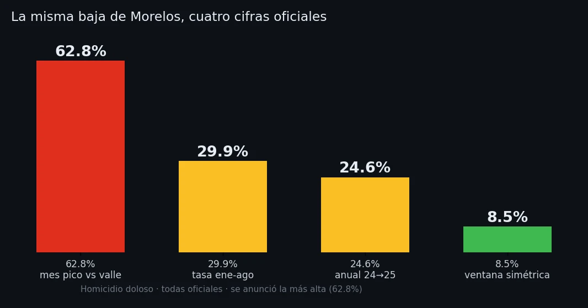

Cuatro cifras y un relevo
Morelos relevó a su jefe de seguridad por el alza de violencia y, cinco semanas después, se presentó como caso de éxito con una baja de 62.8 por ciento. La misma baja se cuenta de cuatro formas. El relevo es la cifra que más dice.

En cuestión de cinco semanas, el gobierno de Morelos sostuvo dos cosas que no caben juntas. El 23 de abril de 2026 relevó al titular de Seguridad y entregó el mando a un general, José Luis Bucio Quiroz, ante el aumento del homicidio y la extorsión en el estado. El 27 de mayo, en la conferencia matutina de Palacio Nacional, el secretario federal Omar García Harfuch presentó a Morelos como caso de éxito nacional, con una caída de 62.8 por ciento en homicidio doloso. Entre una afirmación y otra no hubo un punto de quiebre estadístico que las reconcilie. Hubo un cambio de marco.
Conviene poner los números sobre la mesa, porque ninguna de las cifras es inventada. Según el Secretariado Ejecutivo del Sistema Nacional de Seguridad Pública, el homicidio doloso en Morelos pasó de 1,302 víctimas en 2023 a 1,323 en 2024, y bajó a 997 en 2025. La caída real de 2024 a 2025 es de 24.6 por ciento, y es la cifra que el propio estado presentó ante el Consejo Nacional de Seguridad Pública, junto con un 29.9 por ciento calculado sobre la tasa de enero a agosto. Son descensos verdaderos. El problema no es que mientan: es cuál de los muchos descensos posibles se elige contar, y qué se omite al contarlo.
El 62.8 por ciento federal sale de comparar un mes contra otro mes: noviembre de 2024, que fue un pico, contra mayo de 2026, que fue un valle. Cuando se comparan seis meses contra los seis meses equivalentes del año anterior, la ventana metodológicamente neutra, la baja honesta queda en 8.5 por ciento. La diferencia entre 62.8 y 8.5 no está en la realidad de Morelos: está en la elección del punto de partida. Es el mismo mecanismo que esta casa editorial ya documentó a nivel nacional: la cifra se vuelve trofeo y deja de ser termómetro.

Pero el dato más revelador no es ninguno de esos porcentajes. Es el relevo de abril. Porque para cambiar al responsable de seguridad de un estado, el gobierno tiene que reconocer, internamente y en los hechos, que algo iba mal. El relevo es una confesión administrativa: en abril, la violencia subía lo suficiente como para costarle el puesto a alguien. Cinco semanas después, esa misma violencia se presentaba como prueba de una estrategia exitosa. La cifra de mayo no solo infló la baja: borró el reconocimiento de abril.
El sociólogo sudafricano Stanley Cohen estudió esta operación en Estados de negación (2001). Su hallazgo central no es que los gobiernos nieguen los hechos crudos, que suelen ser indesmentibles, sino que nieguen su significado. Cohen lo llamó negación implicatoria: se admite el dato y se rechaza lo que implica. Nadie en Morelos niega que hubo un relevo en abril ni que hubo muertos. Lo que la cifra de mayo administra es el significado: convierte un año que empezó con un despido por inseguridad en un año de éxito en seguridad. El hecho permanece; su lectura se reescribe.
Hay una capa más, y la ofrezco como dato, no como adjetivo. La baja del homicidio en Morelos no viene sola. En el mismo periodo, el feminicidio subió de 45 casos en 2023 a 50 en 2024, y los archivos estatales muestran al alza la extorsión, la violencia familiar y los delitos cometidos por servidores públicos. Una cifra que baja, rodeada de varias que suben, no describe un estado más seguro: describe un estado que mejoró en el único indicador que se anunció. Y conviene recordar el contexto inmediato: el anuncio del 62.8 por ciento llegó cinco días después de la Operación Enjambre, que detuvo a funcionarios morelenses ligados al crimen, y un día antes de que la gobernadora Margarita González Saravia presentara un Plan de Seguridad de diez puntos. Una baja que se presume al mismo tiempo que se anuncia un plan nuevo es, por definición, una baja que el propio gobierno no considera terminada.
A mi juicio, y esto es lectura, no dato, el problema de fondo no es la aritmética sino la memoria. Una democracia que solo conserva la cifra conveniente de cada mes pierde la capacidad de evaluar a sus gobiernos, porque cada anuncio borra el anterior. El ciudadano no necesita que le digan que la violencia bajó 62.8 por ciento. Necesita poder preguntar por qué, si bajó tanto, hubo que cambiar al jefe de seguridad seis semanas antes. Esa pregunta es la que la cifra-trofeo está diseñada para que no se haga.
Morelos tuvo cuatro cifras de baja y un relevo por alza en el mismo año. Todas oficiales. La tarea de quien lee no es elegir cuál creer, sino notar que se ofrecieron todas, en distintos momentos, según lo que cada momento necesitaba contar.
- Stanley Cohen, Estados de negación: ensayo sobre atrocidades y sufrimiento (Polity Press, 2001; ed. española Facultad de Derecho UBA / British Council, 2005). Ficha editorial
- Homicidio doloso de Morelos 2023-2025 (1,302 / 1,323 / 997) y feminicidio: datos abiertos de incidencia delictiva del SESNSP, corte 2025. SESNSP — datos abiertos
- Morelos reduce 29.9% el homicidio doloso (tasa enero-agosto) y 24.6% (enero-diciembre 2025), ante la 51ª Sesión del Consejo Nacional de Seguridad Pública. Gobierno de Morelos
- Relevo en la Secretaría de Seguridad de Morelos (general José Luis Bucio Quiroz) ante el aumento de homicidio y extorsión, 23 de abril de 2026. La Silla Rota
- García Harfuch: caída de 62.8% en homicidio doloso de Morelos, conferencia matutina del 27 de mayo de 2026. El Heraldo de México · La Jornada Morelos
- Plan de Seguridad por Morelos (diez puntos), 28 de mayo de 2026, una semana después de la Operación Enjambre. La Jornada
- Auditoría metodológica de la ventana (62.8% contra 8.5%, ventana simétrica): comunicado auditado El −62.8% de Morelos y tablero ciudadano con los 55 delitos y los 32 estados: Expediente Inseguridad México.
Las ligas van a la vista para que cualquiera compruebe por su cuenta. Si alguna dejó de resolver, escríbenos y la reponemos.
SRVO